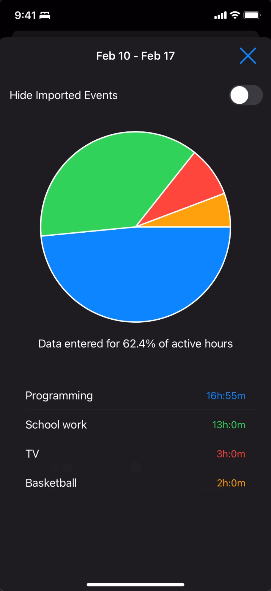
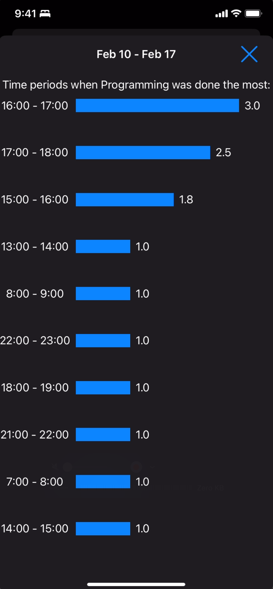

Data Visualization
Prodler offers powerful charting capabilities to help you understand your time usage patterns better.
Available Charts
- Pie Charts: Visualize time distribution across different activity categories
- Bar Graphs: Track activity patterns over time

